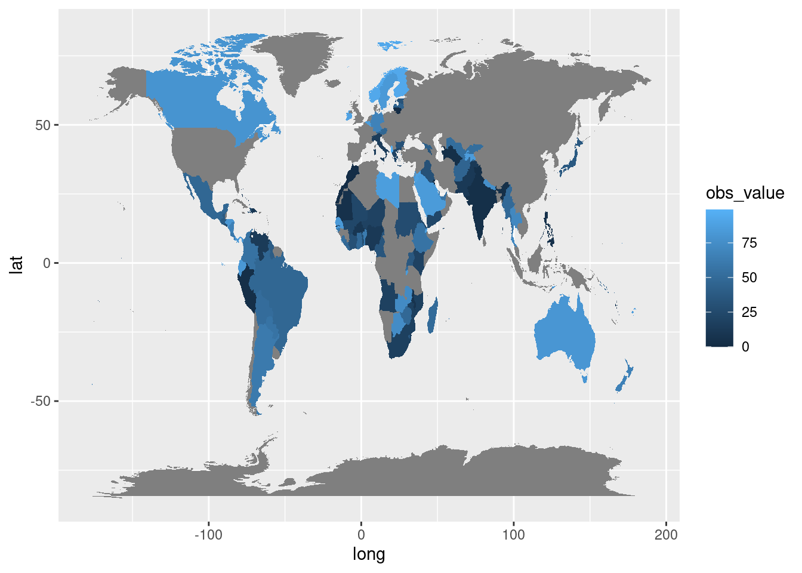
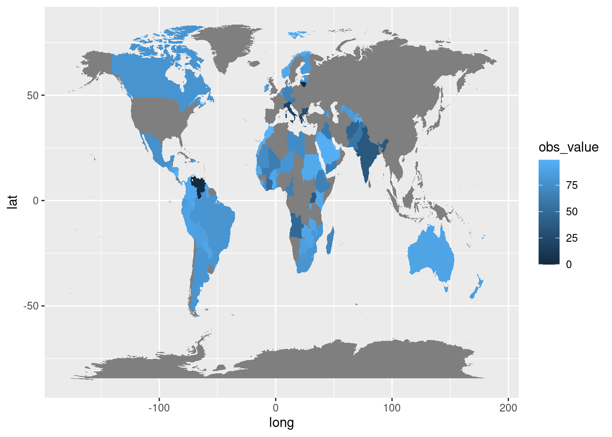
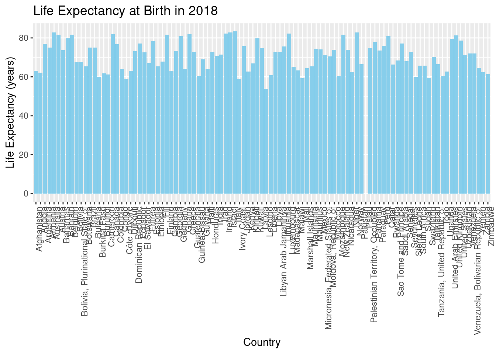
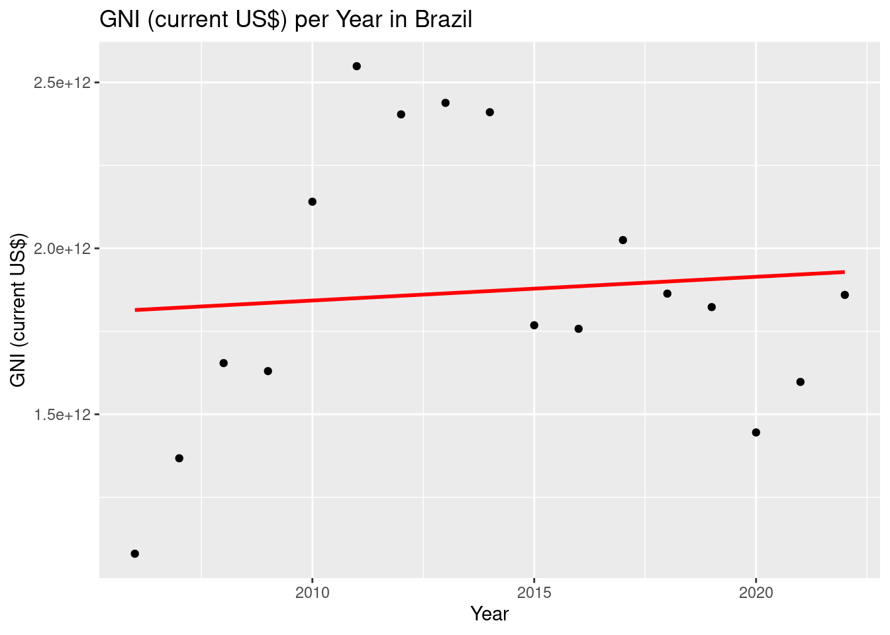
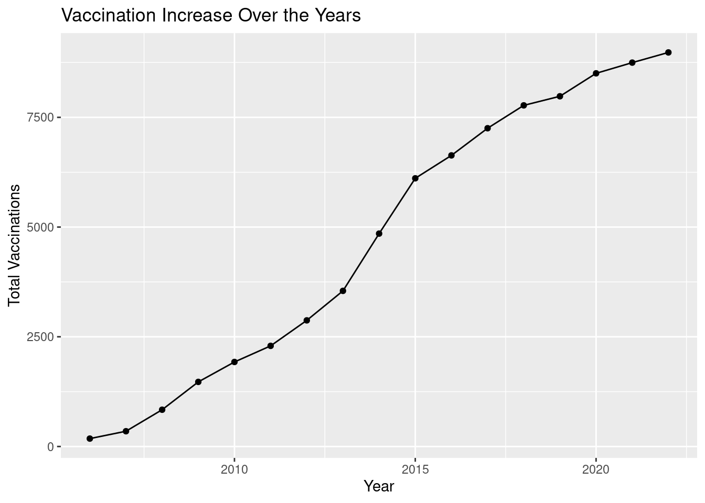

Population, Vaccine & GNI

In today’s interconnected world, where borders blur and distances shrink, the health of our global community is more intertwined than ever before. In the midst of this intricate tapestry lies the vulnerable population of children under 2 years of age, whose health and well-being form the cornerstone of our shared future. As we navigate the complexities of modern life, the importance of ensuring their protection against preventable diseases cannot be overstated. In this pursuit, vaccination emerges as a beacon of hope, offering a lifeline to safeguard the health and vitality of our youngest generation.
Children below 2 years of age are particularly susceptible to a myriad of infectious diseases, ranging from measles and polio to pneumonia and rotavirus. Their developing immune systems are still maturing, leaving them more vulnerable to serious complications and even death from these illnesses. Additionally, factors such as limited access to healthcare, inadequate nutrition, and overcrowded living conditions further exacerbate their risk. In regions with limited healthcare infrastructure or facing humanitarian crises, the need for vaccination becomes even more pressing, as it represents a critical intervention to prevent outbreaks and protect the most vulnerable among us.
Vaccination offers a multitude of benefits that extend far beyond individual health. At its core, it is a cornerstone of public health, serving as a powerful tool to control and eliminate infectious diseases. By immunizing children below 2 years of age, we not only protect them from potentially life-threatening illnesses but also create a ripple effect of benefits throughout society. Vaccination helps build community immunity, reducing the spread of disease and protecting those who may be unable to receive vaccines themselves due to medical reasons. Moreover, it contributes to overall health equity by ensuring that all children, regardless of their background or circumstances, have access to lifesaving protection. From economic gains to social cohesion, the benefits of vaccination are manifold, paving the way for healthier, more resilient communities and a brighter future for generations to come.

In 2018, life expectancy emerged as a pivotal marker of global health and well-being, offering insights into the collective progress and challenges faced by nations worldwide. As the world continues to grapple with the complexities of modern healthcare, the significance of life expectancy extends far beyond mere statistics, serving as a poignant reflection of societal priorities and healthcare systems’ effectiveness. Against this backdrop, the connection between life expectancy and vaccination becomes increasingly apparent, highlighting the critical role of preventive healthcare measures in shaping individuals’ longevity and overall population health.
Life expectancy, often measured at birth, represents the average number of years a newborn is expected to live under prevailing mortality conditions. In 2018, this metric varied significantly across countries, reflecting disparities in access to healthcare, socioeconomic factors, and public health initiatives. While some nations boasted impressive life expectancies surpassing 80 years, others struggled to reach or maintain this benchmark, grappling with issues such as infectious diseases, malnutrition, and inadequate healthcare infrastructure.
Central to the discussion of life expectancy in 2018 is the profound impact of vaccination on population health outcomes. Vaccines have played a pivotal role in extending life expectancy by preventing a wide range of infectious diseases that once posed significant threats to public health. Through widespread vaccination campaigns, countries have successfully curbed the spread of diseases such as measles, polio, and influenza, thus reducing mortality rates and contributing to longer, healthier lives.
Moreover, the benefits of vaccination extend beyond individual health to encompass broader societal gains, including improved life expectancy and quality of life for entire populations. By immunizing vulnerable groups, including children below 2 years of age, vaccines protect individuals from debilitating illnesses and their associated complications, thereby enhancing overall population health and well-being. The success of vaccination programs in extending life expectancy underscores the importance of continued investment in preventive healthcare measures and underscores the need for equitable access to vaccines for all individuals, regardless of geographical location or socioeconomic status.
As we reflect on the state of global health in 2018, the connection between life expectancy and vaccination serves as a poignant reminder of the transformative power of preventive healthcare interventions. By prioritizing vaccination efforts and ensuring widespread access to vaccines, nations can continue to improve life expectancy and pave the way for healthier, more resilient communities in the years to come.

In Brazil, Gross National Income (GNI) serves as a key indicator of economic prosperity and development, offering valuable insights into the country’s financial health and socioeconomic well-being. Over the years, fluctuations in GNI have mirrored Brazil’s economic trajectory, reflecting periods of growth, stagnation, and resilience in the face of external and internal challenges. Against this backdrop, the correlation between GNI trends and vaccination efforts emerges as a compelling narrative, highlighting the interplay between economic factors and public health outcomes.
A scatterplot diagram depicting GNI trends in Brazil over the years provides a visual representation of the country’s economic landscape, with each data point representing a specific year and corresponding GNI value. As we examine the scatterplot, patterns may emerge, revealing trends such as steady growth, sudden spikes or declines, and periods of economic instability. These fluctuations may be influenced by various factors, including global economic conditions, domestic policies, and socio-political events, all of which shape Brazil’s economic trajectory.
However, beyond the realm of economics, the correlation between GNI trends and vaccination efforts unveils a deeper connection between economic prosperity and public health outcomes. Research has consistently demonstrated that countries with higher GNI levels tend to have better healthcare infrastructure, greater access to medical resources, and improved health outcomes for their populations. As Brazil’s GNI rises, so too does its capacity to invest in healthcare initiatives, including vaccination programs, which play a pivotal role in safeguarding public health and mitigating the burden of preventable diseases.
Indeed, vaccination efforts in Brazil have been instrumental in improving health outcomes and extending life expectancy for its citizens. By immunizing individuals against a wide range of infectious diseases, including measles, polio, and hepatitis, Brazil has significantly reduced morbidity and mortality rates, particularly among vulnerable populations such as children below 2 years of age. Vaccination campaigns, supported by government initiatives and international partnerships, have helped curb the spread of disease, prevent outbreaks, and protect the most vulnerable members of society.
As we reflect on Brazil’s GNI trends and vaccination efforts over the years, it becomes evident that economic prosperity and public health are intrinsically linked, each influencing and reinforcing the other in a symbiotic relationship. By fostering economic growth and investing in healthcare infrastructure, Brazil can continue to improve health outcomes, enhance life expectancy, and ensure the well-being of its citizens for generations to come. In this way, the correlation between GNI trends and vaccination efforts serves as a testament to the transformative power of sustainable development and inclusive healthcare policies.

The curve in the diagram representing the increase in vaccination coverage over the years illustrates a gradual but steady upward trajectory, reflecting the progressive expansion of immunization efforts globally. This curve is indicative of the collective efforts of countries, healthcare organizations, and international bodies to enhance vaccination coverage and improve public health outcomes over time.
At its inception, the curve may depict relatively modest gains in vaccination coverage, reflecting the early stages of vaccine development and deployment. However, as scientific advancements, public health campaigns, and infrastructure improvements take hold, the curve begins to ascend more steeply, signaling a period of accelerated progress in vaccination coverage rates.
As the curve ascends, it mirrors the increasing momentum behind vaccination efforts, driven by factors such as improved vaccine access, expanded healthcare infrastructure, heightened public awareness, and targeted intervention strategies. This upward trajectory is often accompanied by significant milestones, such as the introduction of new vaccines, the implementation of large-scale vaccination campaigns, and the attainment of vaccination coverage goals set by global health initiatives.
Throughout its ascent, the curve may exhibit fluctuations and variations, reflecting the diverse challenges and contexts faced by different countries and regions. Some areas may experience rapid gains in vaccination coverage due to robust healthcare systems and proactive policy measures, while others may encounter obstacles such as vaccine hesitancy, logistical constraints, or socio-economic disparities that impede progress.
Despite these challenges, the overall trend of the curve remains upward, underscoring the resilience and determination of stakeholders to overcome barriers and advance vaccination goals. This upward trajectory is a testament to the enduring value of vaccination as a cornerstone of public health, offering protection against a wide range of infectious diseases and contributing to improved health outcomes and well-being for individuals and communities worldwide.